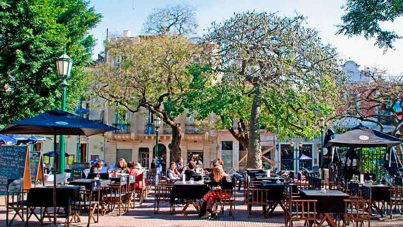
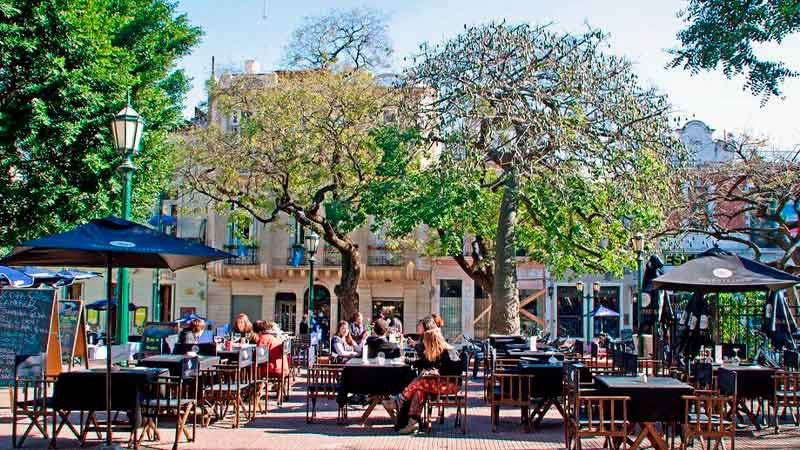

Museos y lugares históricos


Mercados y espacios verdes
 

Tanguerías
San Telmo es unos del pocos barrios porteños en donde se conjuga lo colonial, el tango y la modernidad.
Museos y lugares históricos
Mercados y espacios verdes
Tanguerías